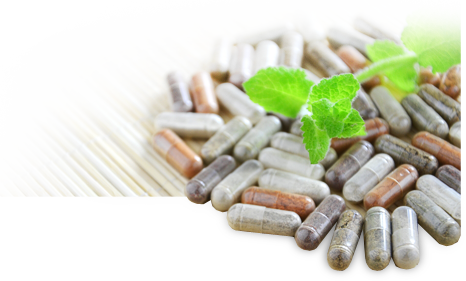
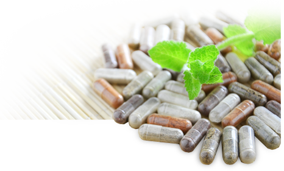

here's how
to make your body super happy


let's
get started
Be healthy. Feel great! Body Beanz are all in one, truly all natural, daily supplemental nutrition — Read on to discover how you can try them
100% risk free.

what "they" don't want you to know?
Doesn't superfood nutrition sound better than chemical nutrition? Most vitamin/supplement brands are man-made crystalline chemical isolates, not organically whole vitamins you find in real food. And guess what? They're often derived from petroleum extracts, coal tar derivatives, and other industrial chemical by-products. Amazing! Just think...this is the very thing you take daily to "supplement" your diet for maximum health. Is that what you want to be taking?
Look at the labels of many products and you will see all sorts of chemical sounding names like:
- Ascorbic acid
- D-Alpha Tocopheryl Succinate
- Sodium Benzoate
- Magnesium Oxide
- Chromium Chloride
- Pyridoxine Hydrochloride
- and that's just a few of the dozens you may find
In short, if it sounds like a chemical, it is. Wouldn’t you feel better being able to pronounce the ingredients in your vitamin and supplement bottles?
More Problems with Synthetic Chemical Vitamins:
- May not even be recognized & absorbed by your body
- Laboratory manufactured often in under-regulated overseas factories
- Do not contain critical digestive nutrient co-factors foundin superfoods
- Can have toxic effects in mega dose formulas
By contrast, Body Beanz ingredients are all incredible foods — Superfoods - which provide you a powerful daily dose of amazing essential nutrition! That's the Body Beanz difference. You and your body will love it — We guarantee it.


your happy body is a happy life!
Do you exercise? Watch what goes into your body? Then look at everything you eat, including your vitamins and supplements. Make sure they are something you feel good digesting. After all it is your health.
In each daily packet of Body Beanz you get 4 incredible formulas:
Battle Beanz - Help strengthen your immune system to fight off disease and sickness with an abundance of antioxidants to work against your harmful free radicals

Belly Beanz - Help turn sugars into energy, not fat and support your body's all important blood glucose levels.
Breakdown Beanz - Underappreciated but incredibly important! Non-dairy probiotics add beneficial bacteria to your digestive system, critical for optimal nutrient absorption and greatly affects your overall health & wellness.
Boomer Beanz - Omegas provide essential fatty acids your body cannot manufacture on its own but needs to support a healthy cardiovascular system.
Body Beanz are derived using nature's most amazing nutrition packed fruits, plants, herbs, seeds, & roots. These superfoods have been used for decades, even centuries, by millions of people in countries all around the world for their nutritional, health, and healing properties. We've dried them utilizing a low temperature process that preserves all the essential nutrients.
The result? Now you can directly benefit from these powerful exotic superfoods every day and make your body incredibly happy.
Inorganic man-made synthetic chemical vitamins and supplements are not whole. They lack the natural enzymes, phytonutrients and trace minerals found in whole foods and therefore are called isolates. Your body needs these co-factors to digest, absorb, and utilize nutrients optimally. Without them you put stress on your body as it tries to use its own internal resources to make them into a "whole" form it recognizes. But when your body can't absorb the synthetic chemical isolates, they just go through you. What's the point of that?
Furthermore, consider that synthetic vitamins and supplements are made in different factories all around the world, each with different manufacturing standards and regulatory oversight.
Body Beanz includes many organic and wildcrafted ingredients which are packaged in an FDA approved GMP facility. Where are your vitamins & supplements made?


 
